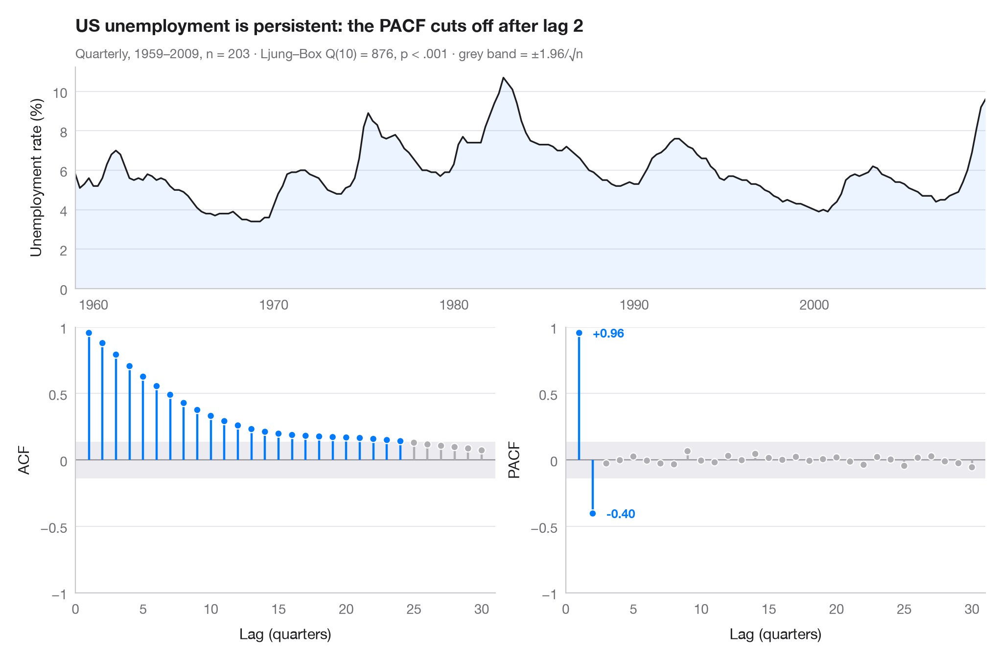

ACF と PACF
自己相関と偏自己相関をロリポップで描き、95% 有意帯を添えます。

自己相関関数（ACF）は、時系列が k 期前の自分自身とどの程度強く相関しているかを測ります。偏自己相関（PACF）は、その間にある短いラグの影響を取り除いたうえで同じことを行います。灰色の帯（±1.96/√n）からはみ出す棒は、ホワイトノイズから生じる値より大きいものです。2つのパネルを合わせて見ると、モデルの見当が付きます。ここでは ACF が 11年周期の太陽活動周期 で振動する一方、PACF は数ラグで切断されており、これは自己回帰過程の特徴です。
データは statsmodels に同梱されている 1700–2008年の年次ウォルフ黒点数（sm.datasets.sunspots）です。相関は statsmodels.tsa.stattools.acf と pacf で求め、サブタイトルには自己相関なしを帰無仮説とするリュング・ボックス検定の結果を示しています。
コードおよび図中のテキストは英語です。
import matplotlib.pyplot as plt
import numpy as np
import statsmodels.api as sm
from statsmodels.stats.diagnostic import acorr_ljungbox
from statsmodels.tsa.stattools import acf, pacf
# Data: yearly sunspot numbers
df = sm.datasets.sunspots.load_pandas().data
y = df.set_index(df.YEAR.astype(int))["SUNACTIVITY"]
n, nlags = len(y), 30
band = 1.96 / np.sqrt(n)
lb = acorr_ljungbox(y, lags=[10]).iloc[0]
fig = plt.figure(figsize=(10, 6.5))
gs = fig.add_gridspec(2, 2, height_ratios=[1, 1.2])
ax_ts = fig.add_subplot(gs[0, :])
axes = [fig.add_subplot(gs[1, 0]), fig.add_subplot(gs[1, 1])]
# Top: the series itself
ax_ts.plot(y.index, y, color="#1D1D1F", lw=1.2)
ax_ts.fill_between(y.index, y, color="#007AFF", alpha=0.08, lw=0)
ax_ts.set(ylabel="Sunspot number", xlim=(y.index[0], y.index[-1]), ylim=(0, None))
# Bottom: ACF and PACF as lollipops with the white-noise band
values = [acf(y, nlags=nlags)[1:], pacf(y, nlags=nlags, method="ywm")[1:]]
for ax, v, name in zip(axes, values, ["ACF", "PACF"]):
lags = np.arange(1, nlags + 1)
sig = np.abs(v) > band
colors = np.where(sig, "#007AFF", "#AEAEB2")
ax.axhspan(-band, band, color="#E5E5EA", alpha=0.7, lw=0)
ax.axhline(0, color="#8E8E93", lw=0.8)
ax.vlines(lags, 0, v, color=colors, lw=1.6)
ax.scatter(lags, v, s=28, color=colors, edgecolor="white", lw=0.8, zorder=3)
ax.set(xlabel="Lag (years)", ylabel=name, ylim=(-1, 1), xlim=(0, nlags + 1))
ax.set_xticks(range(0, nlags + 1, 5))
ax.set_yticks([-1, -0.5, 0, 0.5, 1], ["−1", "−0.5", "0", "0.5", "1"])
for lag in (11, 22):
axes[0].annotate(f"{lag} y", (lag, values[0][lag - 1]), xytext=(0, 8), textcoords="offset points",
ha="center", fontsize=9, color="#007AFF", fontweight="semibold")
ax_ts.set_title("Sunspots follow an 11-year cycle — an autoregressive signature", pad=26)
ax_ts.text(0, 1.04, f"Yearly Wolf numbers 1700–2008, n = {n} · Ljung–Box Q(10) = {lb.lb_stat:.0f}, "
f"p < .001 · grey band = ±1.96/√n", transform=ax_ts.transAxes, fontsize=9.5, color="#6E6E73")
plt.show()
図にはオプションの Statlas スタイル を使用しています。同じ見た目にするには plt.style.use("statlas.mplstyle") を追加してください。
引用方法
Statlas は Thierry Warin が作成・運営しています。研究や業務に役立った場合は、ぜひ引用してください。
Warin, T. (2026). ACF and PACF. In Statlas: The Python Gallery of Statistical Graphics. https://warint.github.io/pystatlas/time-series/acf-pacf/
@misc{warin2026statlas,
author = {Warin, Thierry},
title = {Statlas: The Python Gallery of Statistical Graphics},
year = {2026},
howpublished = {\url{https://warint.github.io/pystatlas/}},
note = {Source code: https://github.com/warint/pystatlas}
}